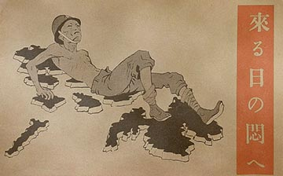
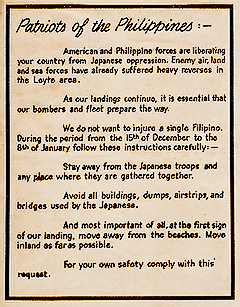

|
j
a v a s c r i p t |
January 12, 1945
Tribune: "Nippon forces at Lingayen resist enemy." No Japanese reports of American losses are printed, "owing to the failure of even the Japanese reconnaissance planes to return" — they are diving on the Americans. A 100 to 150 ship convoy with escorts is off Mindoro, "hesitating to enter the waters west of Luzon in fear of attack" by kamikaze units. Estimates of 15 to 16 converted aircraft carriers are west of Luzon. "Army goods to be given to city poor." Guinto thanked the Japanese for their "generosity." Today I saw two groups of Japanese civilians and soldiers leaving on foot, staggering under heavy packs. One group had two dokars loaded with food and clothing being pulled by eight men with ropes. The other group had two pushcarts loaded with Yoshiwara comfort girls. As the exodus continues, even carretelas are being modified for horseless transportation. Cars are being kept for a last minute dash. There's not much news today other than an American 20-mile advance to Pozorrubio, perhaps cutting the highway to Baguio. By now, Yamashita is well up in the Cordillera region, but organized naval personnel are preparing to make a stand here in the city. They are constructing a few tank barriers, particularly in the Southern approach to Manila. Railroad ties are being cemented into the road on Quezon Boulevard. In lieu of antitank weapons, the Japanese expect to rush the tanks and set off explosives strapped to their bodies. Meanwhile, explosions continued all day today; even sunken ships in the Bay were dynamited. A small oiler went up and it really had oil in it! No Japanese planes were seen in the last 24 hours; only around 22 B-24s came over Manila today. The currency continues to fall. An egg now costs P100 each, a ganta of rice is up to P750, and some looters won't sell for Japanese currency anymore. The Japanese opened up with machine-guns on looters in the valley behind Manga Avenue, and later placed sentries on the street. Most local police and Home Guards have only canes — no rifles or pistols. The Japanese were firing all over the place well before the 2100 curfew. Mob psychology may well develop if and when the Japanese pull out completely. A leaflet dropped in the provinces advised the population to stay well away from the beaches, to go to the countryside while avoiding main roads, and to widely skirt potential military targets between December 15 and January 8. The landing took place on the 9th; presumably the Lingayen Gulf received plenty of these leaflets. Another leaflet I saw had a starving Japanese soldier sprawled over the Philippine archipelago. The text appealed to the Japanese to surrender as they were hopelessly beaten in the air, land and sea, and cut off from reinforcement or resupply.

Your Day of Agony is Coming

Safety Instructions
|
|
|
|
|